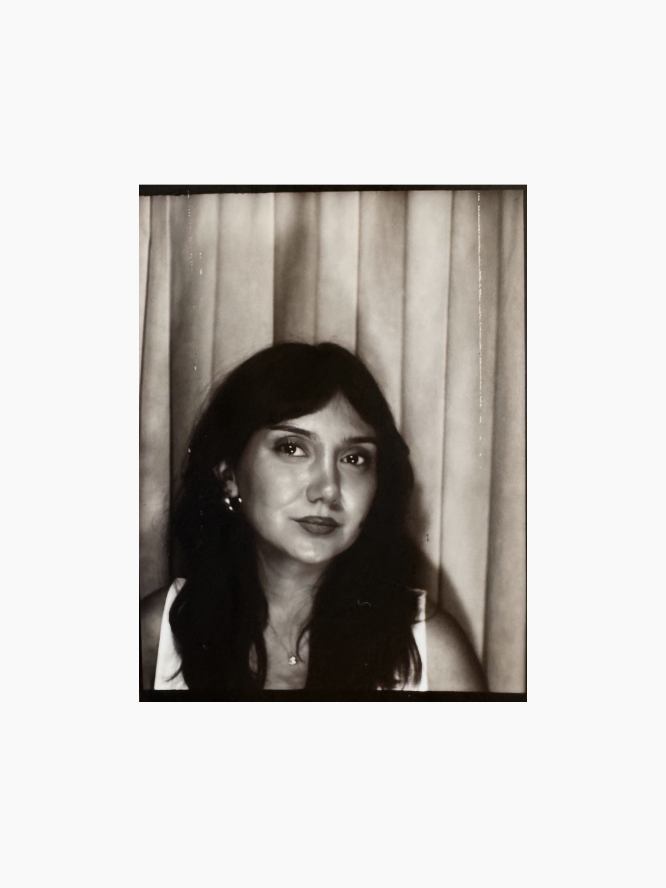

Designer UX/UI & Stratégie Digitale
Profil
Issue d’un Master en Data Analytics & Marketing Management, j’ai construit mon parcours à l’intersection de la donnée, de la stratégie et de la création. En agence de publicité, sur des campagnes digitales et des lancements de marque, j’ai affiné ma compréhension des comportements utilisateurs et des mécanismes qui guident les décisions.
Formée à l’UX/UI Design, au design graphique et au développement web, je conçois des expériences de bout en bout. J’ai mené Wevent, une app événementielle, de la recherche utilisateur jusqu’au prototype validé en deux rounds de tests. Je développe aussi mes compétences en HTML, CSS et JavaScript pour collaborer avec les équipes produit.
Ce qui me porte, c’est de transformer des insights utilisateurs en expériences simples, intuitives et utiles. J’aime remettre en question les évidences, identifier les frictions et trouver le bon équilibre entre besoins utilisateurs et objectifs business.
Formation
UX/UI Design — Design Graphique — Développement Web
La Toile · 2026
Master Data Analytics & Marketing Management
INSEEC · 2024
Compétences
UX Design
- Recherche Utilisateur
- Tests d’Utilisabilité
- Wireframing
- Stratégie UX
- Parcours Utilisateur
UI & Outils
- Figma
- Affinity Designer
- Illustrator · Photoshop
- HTML / CSS / JS
- Design System
Langues
- Français Natif
- Anglais C1
- Turc Natif